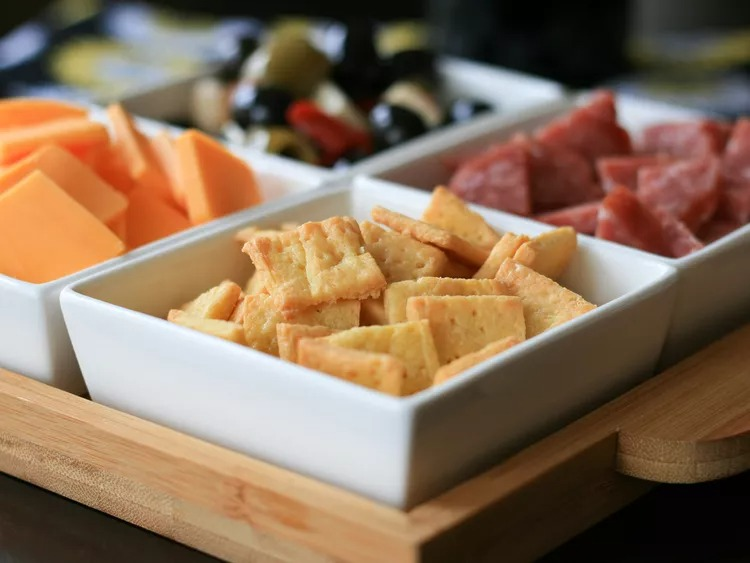

Keto Crackers

Description
These low-carb keto crackers are made with mozzarella cheese, almond flour, and egg yolk. The recipe makes about 40 crackers, depending on the size.
- 1/2 cup shredded mozzarella cheese
- 1/3 cup finely ground almond flour
- 1/8 teaspoon garlic powder
- 1/8 teaspoon salt
- 1 large egg yolk
Steps
- Preheat the oven to 425 degrees F (220 degrees C). Line a baking sheet with parchment paper.
- Combine mozzarella cheese, almond flour, garlic powder, and salt in a microwave-safe bowl. Heat in the microwave for 30 seconds.
- Use your hands to knead mozzarella dough until fully mixed. Add egg yolk and continue kneading until completely blended into dough.
- Lay a piece of parchment paper on a flat surface and place dough on top. Place a second piece of parchment paper on top of dough. Press down on dough with your hands until ready for a rolling pin.
- Roll into a very thin rectangle with even sides. Gently poke holes in dough using a fork to prevent it from bubbling while baking. Cut dough into 1-inch squares with a knife.
- Lay squares on the prepared baking sheet, leaving a little space between them
- Bake in the preheated oven for 5 to 6 minutes. Remove the baking sheet from the oven and turn crackers over. Continue baking until lightly browned and crisp, about 2 more minutes. Watch them closely to prevent burning.